Ирина, здравствуйте! Вот четыре варианта главной страницы для вашего сайта. Все в тёмной тёплой гамме, как на сайте, который вам понравился, только цены и время здесь видны сразу. Откройте каждый и пролистайте до конца, лучше и на компьютере, и на телефоне: движение и 3D видно только в живом макете, на картинках их нет.
Фото и видео пока со старого места. После съёмки в воскресенье поставлю новые кадры, а раскладка и анимация останутся. Цены, время процедур и список услуг взяты из вашего YCLIENTS, во всех вариантах они одинаковые. Напишите, какой вариант ближе. Если понравятся части из разных, их можно собрать вместе.
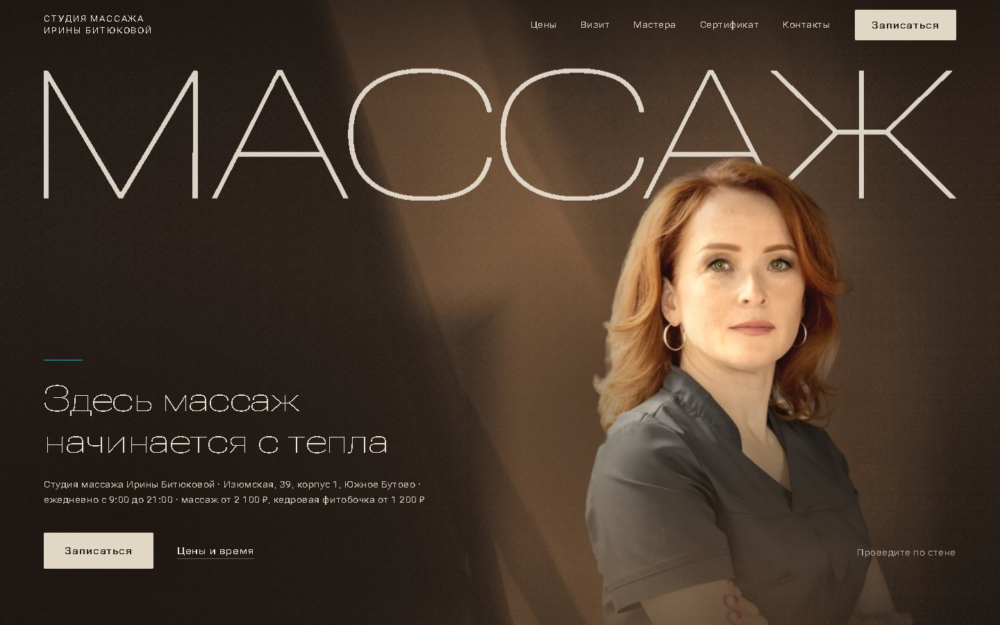
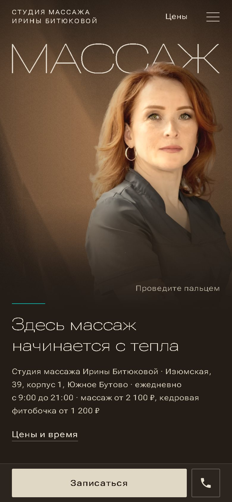
На первом экране вы у стены студии, за вами крупно слово «Массаж». Стена в полутьме: где ведёте мышкой или пальцем, загорается тёплый свет и медленно гаснет. Сразу под первым экраном цены и время всех услуг, их можно отобрать по задаче. Дальше визит по шагам, бочку можно разобрать прокруткой, потом камни, мастера и сертификат.
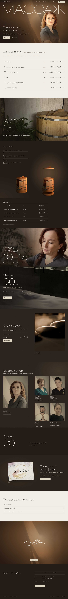
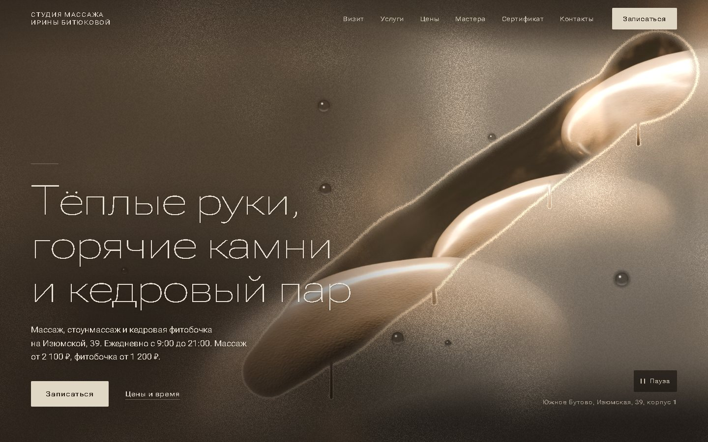
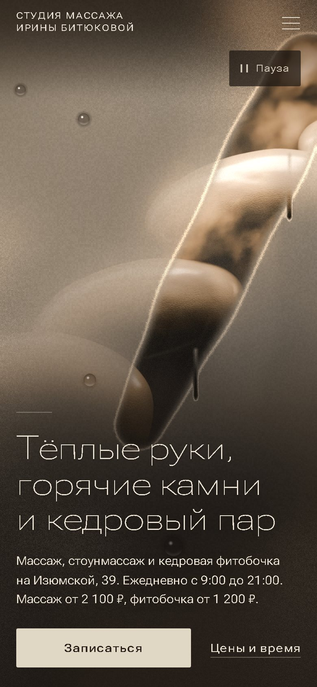
Первый экран как запотевшее стекло в бане, за паром горячие камни. Проведите пальцем или мышкой, стекло станет прозрачным, а потом снова запотеет. Дальше визит сценами: пар, чай, массаж, следующая открывается в проёме текущей. Перед стоунмассажем мимо камеры проходит тёплый камень и открывает новую главу.
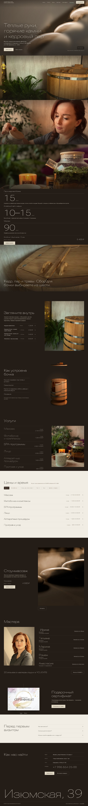
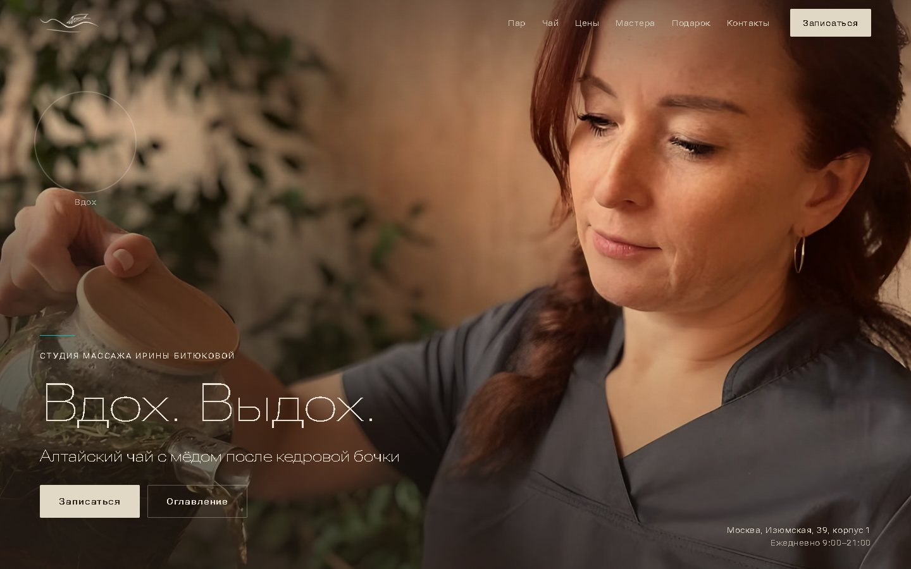
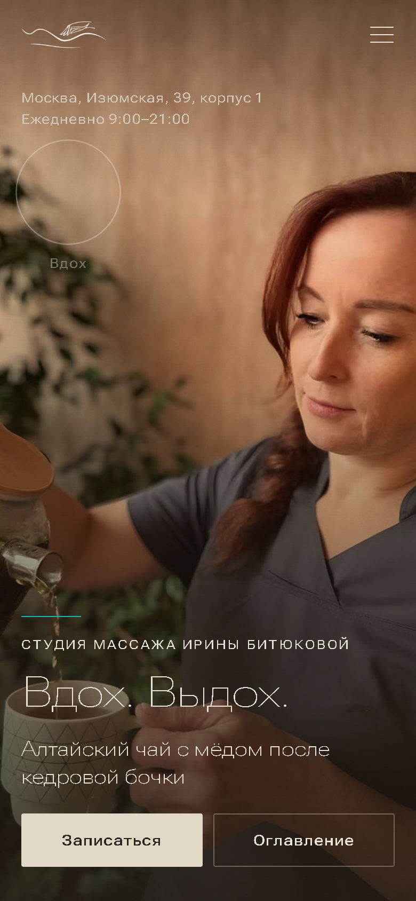
Страница дышит вместе с человеком: кадр, где вы наливаете чай, медленно приближается на вдохе и отдаляется на выдохе, а кольцо подсказывает «Вдох» и «Выдохните». Дальше оглавление из шести глав, текст про бочку закрывается полосками, бочку можно покрутить мышкой или пальцем, портреты мастеров меняются полосками.
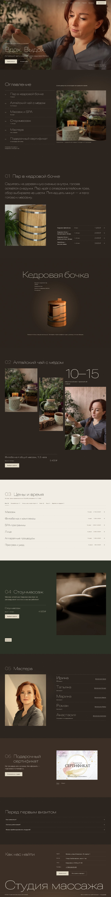
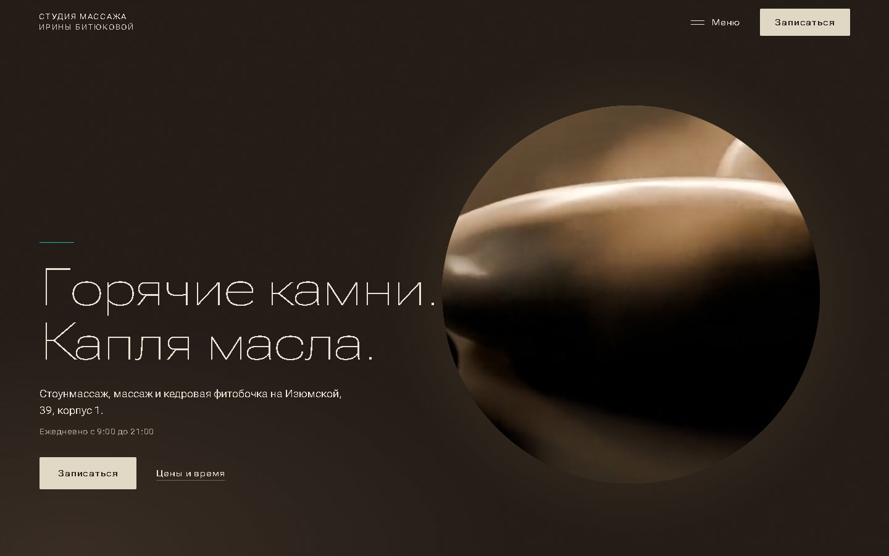
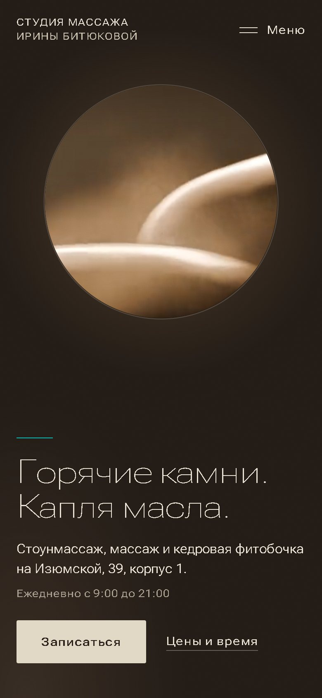
На первом экране круг, в нём 3D-фильм: горячие камни в масле на льне, капля масла, пар. При прокрутке круг раскрывается на весь экран, и камера едет вдоль камней. Визит листается лентой, мастера крупными портретами.
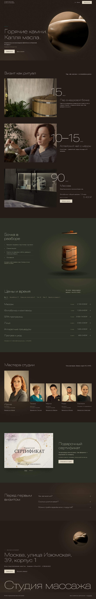